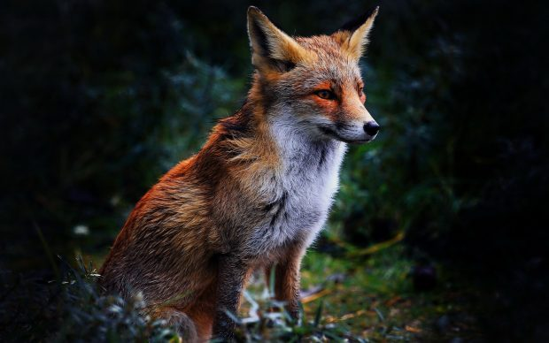
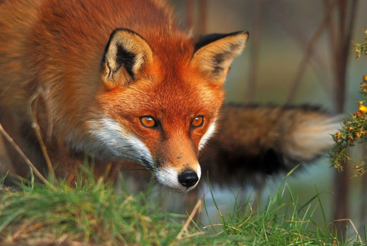

The Facts on Foxes
First, the Basics
Foxes are omnivorous mammals that are light on their feet. They are often mistaken for other members of the Canidae family, which include jackals, wolves and dogs. They stand out from their relatives because of their long, thin legs, lithe frame, pointed nose and bushy tail.
These animals are very social and live flexible lives. They are found all over the world — in North America, Europe, Asia and North Africa — and call a wide range of terrains their home. They also eat a greatly varied diet.
So, How big are they?
Most foxes are around the same size as medium-sized dogs. Since foxes are smaller mammals, they are also quite light. They can weigh as little as 1.5 lbs. (680 grams) and as much as 24 lbs. (11 kg). The fennec fox is the smallest living fox and doesn't get any bigger than a cat — about 9 inches (23 centimeters) and weighing 2.2 to 3.3 lbs. (1 to 1.5 kilograms), according to National Geographic. Other species can grow to 34 inches (86 cm) from their head to their flanks. Their tails can add an additional 12 to 22 inches (30 to 56 cm) to their length.
Where they call home
Foxes usually live in forested areas, though they are also found in mountains, grasslands and deserts. They make their homes by digging burrows in the ground. These burrows, also called dens, provide a cool area to sleep, a good location to store food and a safe place to have their pups. Burrows are dug-out tunnels that have rooms for the fox and its family to live in. The burrows also have several exits so that they can flee if a predator enters the burrow.
How they live
Foxes are very social creatures that live in packs. A group of foxes are called a leash, skulk or earth, according to the U.S. Department of Interior. They are also called packs. No matter what you call them, foxes like to stick near family members. A pack may include older siblings, foxes of breeding age, mates and mothers. Male foxes are known as dogs, tods or reynards, and females are called vixens.
These mammals like to hunt at night and are nocturnal. This means that they sleep during the day. This can change, though, depending on where the fox pack lives. If they live in a place where they feel safe, a fox pack may hunt during the daytime, according to National Parks and Wildlife Service of Ireland.
Foxes have great eyesight. They can see just as well as a cat, in fact. Their eyes are much like a cat's thanks to their vertically slit pupils.
Foxes are also very fast. They can run up to 45 mph (72 km/h). That is almost as fast as the blackbuck antelope, one of the world's fastest animals.
Fox food?
Foxes are omnivores. This means that they eat meat and vegetation. A fox's diet can consist of small animals, such as lizards, voles, rats, mice, rabbits and hares. They round out their diet with birds, fruits and bugs, according to the Smithsonian. Foxes that live near the ocean eat fish and crabs, as well. If they have trouble finding food, a fox will have no problem raiding trash cans to find scraps.
Foxes can eat up to several pounds of food a day. What they don't eat, they often bury under leaves or snow for later.
Babies!
Fox babies are called pups. During mating season, the female will cry out to let males know that she is ready. After mating, females will make a nest of leaves inside her burrow on which to have her pups. This special room in the burrow is called a nesting chamber.
The pregnant female only carries her pups for a gestation period of 53 days. There are usually two to seven pups in a litter. Pup care is a family affair. Both the mother and father share the care of pups. Even older siblings will help take care of their younger brother and sisters by bringing them food.
Foxes live very short lives in the wild. They often live only around three years, according to the Animal Diversity Web. In captivity, they can live much longer. Foxes in zoos, for example, can live 10 to 12 years.
A fox breeding program in Russia may help reveal the genetic roots of domestication of animals.
Conservation status
Most fox species are not endangered, according to the International Union for Conservation of Nature. The union's Red List of Threatened Species includes island gray foxes (near threatened), Sechuran foxes (near threatened) and Darwin’s fox (threatened). It is estimated that there are fewer than 2,500 mature Darwin's foxes in their habitat in Chile. Domestic dog attacks and associated diseases are the main threats, the IUCN said.
Other facts
Foxes are usually monogamous. This means that they have only one mate for life. They also take on nannies to help with their pups. The nannies are female foxes that are not breeders. Sometimes, one male fox will have several female mates. Females that have the same male mate are known to live in the same den together.
Foxes can identify each other's voices, just like humans. The red fox has 28 different sounds they use to communicate. These vocalizations include yips, growls and howls.
The small, slender body of a Red fox allows it to run nearly 30 mph.
Fox hunting was a popular recreation sport in England since the 1500s. Hunting foxes without the aid of dogs is still practiced in the United Kingdom and several other countries including the United States.In folklore, foxes are typically characterized as cunning creatures sometimes having magical powers.
In the wild, fox cubs can fall prey to eagles. Coyotes, gray wolves, bears and mountain lions are all predators for adult foxes.
Foxes have excellent hearing. They can hear low-frequency sounds and rodents digging underground.